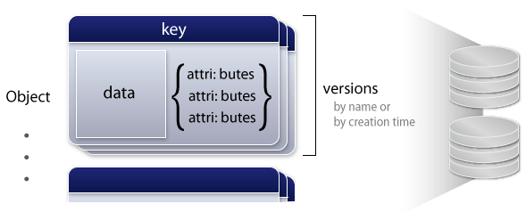

LS4, large-scale simple storage system for multimedia contents

LS4 is a distributed storage system suitable for storing data like photos, musics or movies with attributes.
$ gem install ls4 $ ls4-standalone -s ./data & $ ls4cmd --help
- Scalability
- Versioning
- Availability
- Geo-redunduncy
- Performance
- Continous Snapshot
News
-
2011-05-XX
Released version 1.0.0
-
2011-03-20
Released version 0.9.0
Data Model
Object
LS4 stores a set of objects identified by a key. Each object consists of data and attributes where data is a raw bytes and attributes are associative pairs. Objects are distributed to servers for scalability and copied on multiple servers for availability.
Versions
Each object can have multiple versions. You can get back old version of the object unless you surely delete it. These versions are identified by name or creation time.
With the versions, you can make objects immutable. It will be useful to design customized API layer over LS4. Take a look the API reference for details.
Replica Sets
Replication
Replica set is a set of data servers that stores same objects. When an object is put to a data server, the server copies it to the other servers on the same replica set. If a server is crashed, another server in the replica set fails-over immediately.
Fail-back can be done without stopping the cluster. The operations are documented at the Fault management documents.
Scalability
You can add replica sets to the cluster at any time without any impacts on the applications. By adding the replica sets, storage capacity and read/write performance increase.
You can also add servers to existent replica sets to improve availability and read performance. These servers can be located on remote datacenters for Geo Redundancy.
Direct Data Transfer
HTTP Reverse Proxy
You are probably using reverse proxies on the front of the web service to relay HTTP requests to application servers. Since rich application servers are not so optimized to serve large contents like photos or movies, you'll want to relay the requests to storage servers directly for these contents.
But to realize authentication or other features, you were required to add some mechanisms in the storage servers.
The Bypass
With LS4 and nginx, contents can be transferred without passing through application servers while the application server proceeds HTTP requests. Thus you can reduce CPU load and network traffics.
it's implemented using nginx's X-Accel-Redirect feature. See the HowTo to configure the bypass. Additionally, LVS's Direct Routing may be useful on the proxy.
Geo Redundancy
In these days, it's a common problem of us how to protect large-scale data set from disasters like a crash of the whole datacenter.
You can configure LS4 to replicate data over remote datacenters while applications get data from the local datacenter. It's documented at the location-aware master selection howto.
Ruby + MessagePack
LS4 is fully written in Ruby including management tools. And the inter-process communication, which often becomes complicated, is totally implemented by MessagePack. It provides asynchronous API in the method-invocation style. So it's relatively easy to customize the source code.
(If you worry about the performance of the Ruby, check the traffic offloading howto.)
Quick Start
$ gem install ls4 $ ls4-standalone -s ./data -t 18080
$ ls4cmd add_data "key1" "value1" $ ls4cmd get_data "key1" value1
Installation
You can use RubyGems to install LS4. If you don't have the gem command, install Ruby first.
Standalone server
You can try LS4 using stand-alone server (ls4-standalone) and command-line client (ls4cmd). You can also use HTTP APIs on the port specified with the -t option. See the API reference for details.
Learn More
To build LS4 cluster, see the documents.
Copyright © 2011 FURUHASHI Sadayuki